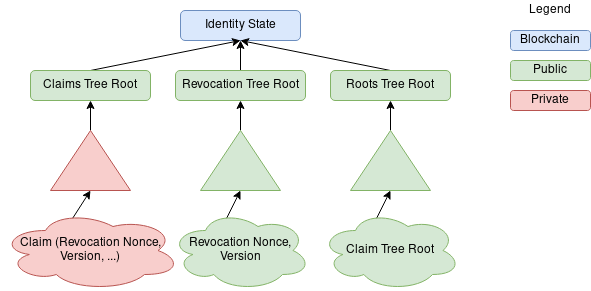

Identity State
Each Identity State (and therefore Identity) consists of three Sparse Merkle Trees:
- Claims Tree - a tree that contains the claims issued by that particular identity.
- Revocations Tree - a tree that contains the revocation nonces of the claims that have been revoked by that particular identity.
- Roots Tree - a tree that contains the history of the tree roots from the Claims tree.
Claims issued by an identity are added to the Claims tree (we'll see in a while why that's not always the case). The position of a claim inside the Sparse Merkle Tree is determined by the hash of the claim's Index while the value stored inside the leaf will be the hash of the claim's Value.
An identity must issue at least one Auth Claim to operate properly. This is the first claim that is issued by an identity and that must be added to the ClT.
An Identity State is a hash of the roots of these three merkle trees.
IdState = Hash(ClR || ReR || RoR) where:
Hash: Poseidon Hash FunctionClR: Claims Tree RootReR: Revocation Tree RootRoR: Roots Tree Root
The identity state gets stored on-chain and represents the status of an identity at a certain point in time.

Code Examples
Create identity trees and add authClaim
package main
import (
"context"
"fmt"
core "github.com/iden3/go-iden3-core"
"github.com/iden3/go-merkletree-sql/v2"
"github.com/iden3/go-merkletree-sql/v2/db/memory"
)
// Generate the three identity trees
func main() {
ctx := context.Background()
// Create empty Claims tree
clt, _ := merkletree.NewMerkleTree(ctx, memory.NewMemoryStorage(), 40)
// Create empty Revocation tree
ret, _ := merkletree.NewMerkleTree(ctx, memory.NewMemoryStorage(), 40)
// Create empty Roots tree
rot, _ := merkletree.NewMerkleTree(ctx, memory.NewMemoryStorage(), 40)
authClaim := core.NewClaim(core.AuthSchemaHash,
core.WithIndexDataInts(X, Y),
core.WithRevocationNonce(0))
// Get the Index and the Value of the authClaim
hIndex, hValue, _ := authClaim.HiHv()
// add auth claim to claims tree with value hValue at index hIndex
clt.Add(ctx, hIndex, hValue)
// print the roots
fmt.Println(clt.Root().BigInt(), ret.Root().BigInt(), rot.Root().BigInt())
}
We've just generated the three identity trees! For now, we only added a leaf corresponding to the authClaim to the Claims tree ClT. The Revocation tree ReT and the RoT remain empty. In particular:
- The revocation tree gets updated whenever an identity decides to revoke a claim. For instance, if a user decides to rotate her keys, then she generates a key pair, creates a new authClaim with the public key from the key pair and adds the claim to the Claims Tree. Now the user can revoke the old public key, so she adds an entry to the Revocation Tree with the claim revocation nonce as an Index and zero as a Value.
- The Roots Tree gets updated whenever the Identity Claims Tree root gets updated.
The executable code can be found here
Retrieve the Identity State IdState
package main
import (
"fmt"
"github.com/iden3/go-merkletree-sql"
)
// Retrieve Identity State
func main() {
// calculate Identity State as a hash of the three roots
state, _ := merkletree.HashElems(
clt.Root().BigInt(),
ret.Root().BigInt(),
rot.Root().BigInt())
fmt.Println("Identity State:", state)
}
Here is what the output would look like:
Identity State:
20698226269617404048572275736120991936409000313072409404791246779211976957795
The very first identity state of an identity is defined as Genesis State
Every verification inside Iden3 protocol is executed against the Identity State. For instance, to prove the validity of a specific claim issued by A to B (in case if the claims gets added to the claims tree):
- user B needs to produce a merkle proof of the existence of that claim inside user's Claims Tree
- user B needs to produce a merkle proof of non-existence of the corresponding revocation nonce inside user's Revocations Tree
The executable code can be found here